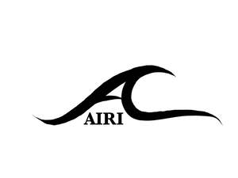

Trade Mark Journal No.2025/028 11 July 2025
UK00004220197 17 June 2025 (21,24,25,26,44)

- Class 21
- Hair for brushes; Hair brushes; Combs for back-combing hair; Hair combs; Shampoo brushes; Combs for the hair (Large-toothed -); Large-toothed combs for the hair; Wide tooth combs for hair; Brushes.
- Class 24
- Satin; Pillowcases [pillow slips]; Shams (Pillow -); Pillow slips; Pillow covers; Silk blankets; Textiles made of satin; Pillow cases; Pillowcases; Turban towels for drying hair; Covers for pillows; Pillow shams; Ticks (mattress and pillow coverings).
- Class 25
- Silk scarves; Neck scarves; Scarves; Scarfs; Neck scarves [mufflers]; Silk clothing; Neck scarfs [mufflers]; Shoulder scarves; Silk ties; Head scarves; Turbans; Shawls and headscarves; Headscarfs; Headdresses [veils]; Headscarves; Head wear; Bonnets [headwear]; Headbands [clothing]; Headbands for clothing; Beach robes.
- Class 26
- Tresses of hair; Hair (Tresses of -); Hair tresses; Plaits of hair; Hair ornaments, hair rollers, hair fastening articles, and false hair; Hair scrunchies; Hair barrettes; Hair curlers; Plaited hair; Hair (Plaited -); Hair twisters [hair accessories]; Hair elastics; Bows for the hair; Hair extensions; Hair bows; Hair ribbons; Ribbons for the hair; Hair weaves; Hair ribbons for Japanese hair styling (tegara); Hair rollers; Hair tassel strings for Japanese hair styling (motoyui); Hair ornaments in the nature of hair wraps; Hair clips; Hair pins; Pins for the hair; Sticks for use in styling the hair; Synthetic hair; False hair for Japanese hair styling (kamoji); Hair curl clips; Ornaments (Hair -); Ornaments for the hair; Hair ornaments; Hair tassel ornaments for Japanese hair styling (negake); Human hair; Hair bands; Bands for the hair; Bands (Hair -); Electric hair curlers; Hair pieces; Hair wraps; Hair curling pins; Ornamental hair pins for Japanese hair styling (kogai); Scrunchies; Hairbands; Ponytail holders and hair ribbons; Barrettes; Elastic for tying hair; Elasticated hair ribbons; Non-electric hair curlers; Ponytail holders; Elasticated hair bands; Clam clips for hair; Hair netting; Braid; Waving pins for the hair; Hair buckles; Rubber bands for hair; Claw clips [hair accessories]; Snap clips [hair accessories]; Chignons for Japanese hair styling (mage); Pigtail ribbons for Korean hair style (Daeng-gi); Braids; Foam hair rollers; Hair fasteners; Scarf clips not being jewelry; Non-electric hair rollers; Hair rollers (Non-electric -); Hair nets; Nets (Hair -); Hair curling papers; Papers (Hair curling -); Tabodome [hair pins for fixing back-hairpieces for use in Japanese hair styling]; Oriental hair pins; Grips for the hair; Hair grips; Hair pins and grips; Hair decorations; Hair slides; Hair ornaments in the form of combs; Hair curlers, other than hand implements; Wigs; Mitten clips; Tape for fixing wigs; Hair grips [slides]; Slides [hair grips]; Twisters [hair accessories].
- Class 44
- Shampooing of the hair; Hair styling; Hair treatment; Hair cutting; Hair perming services; Hair braiding services; Hair weaving; Hair restoration; Hair straightening services; Hair styling services; Hair curling services; Hair weaving services.
Ashleigh Scriven